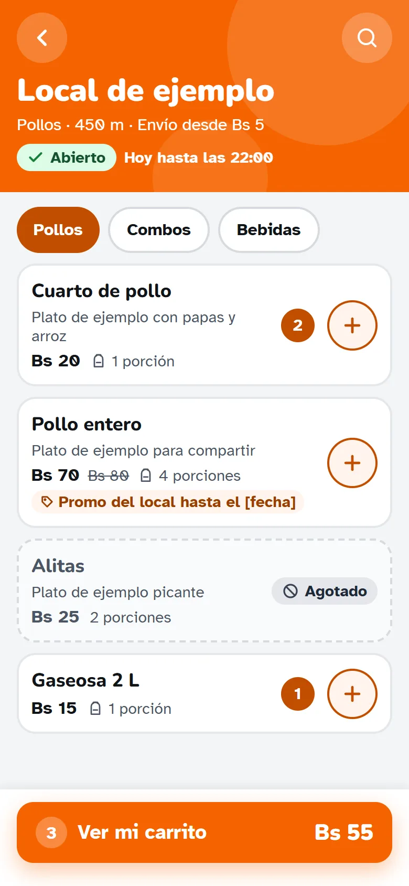
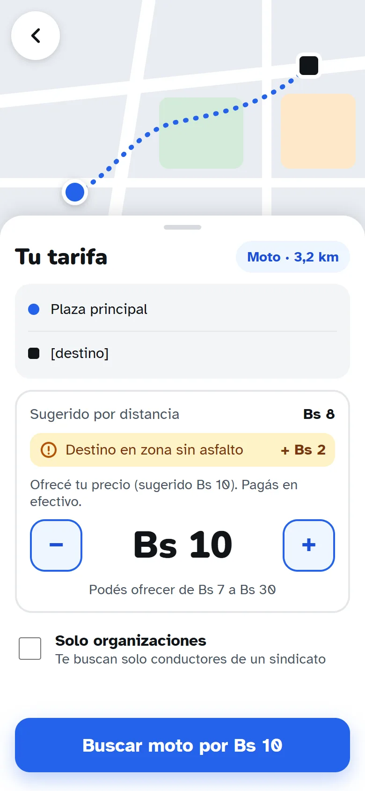
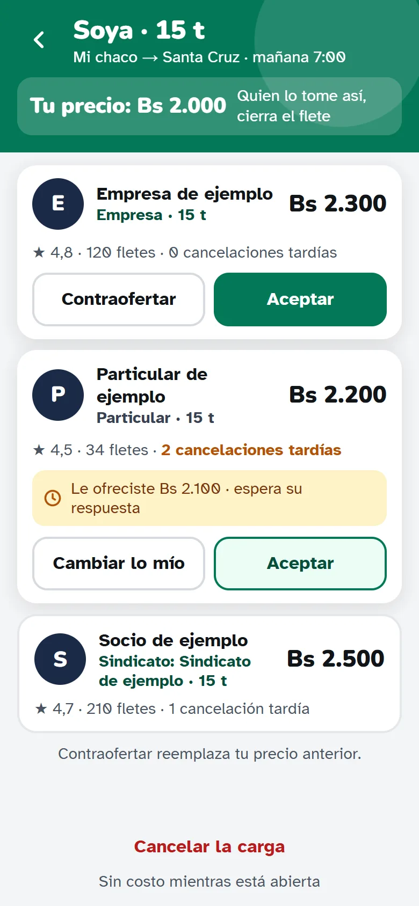
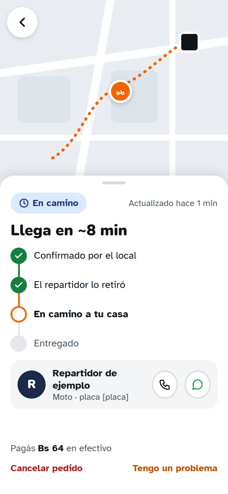

Lo que vas a poder pedir
Delivery
Comida, farmacias y mercados de tu zona, con un repartidor que te lo lleva.
Al lanzarTaxi
Mototaxi, torito o auto. Ofrecés tu precio, pedís al instante o reservás para más tarde.
Al lanzarTransporte de carga
Publicás lo que querés mover y los transportistas te hacen su oferta.
Al lanzarLíneas
Micros e interurbanos: reservás tu asiento y sabés cuándo sale.
Después del lanzamientoEncomiendas
Paquetes en tu ciudad o a otra, de mano en mano y con código de entrega.
Después del lanzamientoCómo funciona
1
Elegís qué necesitás
Comida, un viaje o mover una carga. Ves el precio antes de confirmar.
2
Alguien cerca lo toma
Un repartidor, un taxista o un transportista de tu zona acepta tu pedido.
3
Lo seguís hasta el final
Ves quién viene y por dónde va, hasta que llega.
Así se ve




Son diseños en desarrollo: los nombres de locales, precios y personas son de ejemplo.
Para todos los que mueven la ciudad
Clientes
Una sola cuenta y una sola libreta de direcciones para todo. También se puede pedir por WhatsApp.
Conductores
Repartidores, mototaxistas y camioneros trabajan desde la misma app, en los servicios que permite su vehículo.
Negocios
Restaurantes y tiendas reciben sus pedidos desde el navegador del celular, sin instalar nada más.
Sindicatos y asociaciones
Manejan sus conductores, turnos y rutas desde su propio panel.
Hecha para pueblos y ciudades de Bolivia. Empieza en San Julián, Santa Cruz, y está pensada para sumar más ciudades. Todavía no está publicada: estamos terminando los diseños con gente de la zona.